Download the latest version from SourceForge.
subs2srs allows you to create import files for Anki or other Spaced Repetition Systems (SRS) based on your favorite foreign language movies and TV shows to aid in the language learning process.
This utility will parse through subtitle files, extract the dialog and timing information and then use that information to generate audio clips, snapshots and video clips for each line of dialog.
Most popular subtitle formats are supported:
subs2srs relies on ffmpeg to extract video and thus supports most video codecs (MPEG-4, h.264, XviD, DivX, MPEG-2, etc.) and most video containers (.avi, .mkv, .ogm, .mp4, .flv, .vob, etc.).
With all options enabled, a card will have this information generated for it (assume that it is a Japanese movie):
Here is an example of an Anki flash card that can be generated with subs2srs:
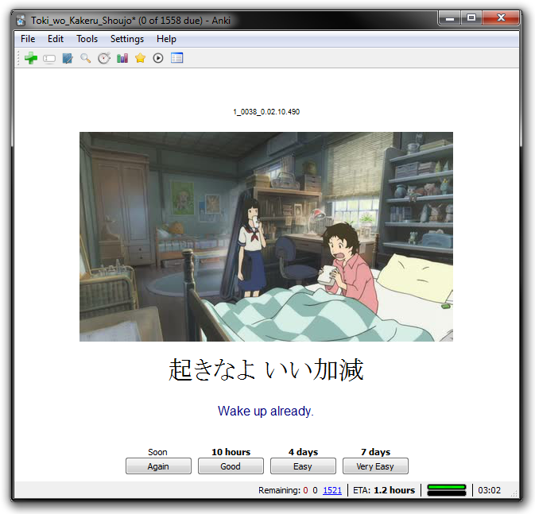
Download the Toki wo Kakeru Shoujo sample Anki deck (via MediaFire):
Download other sample decks from one of the subs2srs decks wiki pages:
For those new to subs2srs, the number of options can seem overwhelming. DON'T PANIC. In most cases you can rely on the default options. When you go through the process a couple of times it will become second nature. In addition, all options are documented in this help file and most options have helpful tooltips. If you do get stuck, don't hesitate to E-mail me at cb4960 'at' [gmail] 'dot' [com].
Here are the general steps you will take:
Obtain any subtitle files and multimedia files that you may need from the TV show or movie that you want to learn from.
Click on the Subs1... button and select a subtitle file in the language that you are trying to learn (your target language).
Click on the Output... button and select the directory that subs2srs can use to place the files that it generates.
(Optional) Click on the Subs2... button and select a subtitle file in your native language. subs2srs will match up this subtitle file with the one that you specified previously in Subs1.
(Optional) Click on the Video... button and select a video file. You need the video file in order to generate audio clips, snapshots and video clips for your flash cards.
If you want to generate audio clips for your flash cards, check the Generate Audio Clips checkbox.
If you want to generate snapshots for your flash cards, check the Generate Snapshots checkbox.
If you want to generate video clips for your flash cards, check the Generate Video Clips checkbox.
Note: It doesn't usually make sense to check both the Generate Audio Clips and the Generate Video Clips checkboxes.
In the Name of deck textbox, enter a name to use when generating various filenames. This is usually the name of the TV show or movie that you will be learning from.
Fill out any other option you may need. More information about these options can be found further down in this help file. Here is a screenshot showing an example setup with Snapshots and Video Clips enabled:
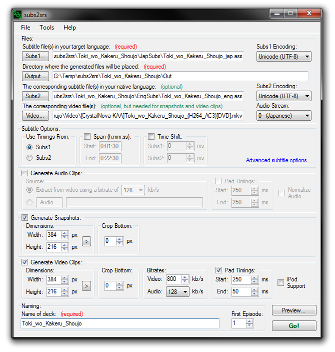
Click the Preview... button to show a preview of what subs2srs will generate. Make sure that the lines from Subs1 and the lines from Subs2 match up correctly and that the audio precisely matches up with the subtitles.
Click the Go! button to begin processing. You will see a progress bar appear. Wait until processing is complete.
After subs2srs is finished processing, open the directory that you entered for the Output... option to see the files generated by subs2srs. You should see a .tsv file and a .media folder. You will use these during the Anki import.
See Importing Into Anki 1 or Importing Into Anki 2 to learn how to import the subs2srs files into Anki. Anki is Spaced Repetition Software (SRS)/electronic flash card software.
In How to Use subs2srs you should have learned how to use subs2srs to generate a tab-separated-value (.tsv) SRS import file and .media folder that can be used with Anki. All you need to do now is create a new Anki deck with the fields that you require:
You can either do this yourself, or you can use the Anki deck template that is packaged with subs2srs (it is named subs2srs_template_for_anki1.anki and is located in the Anki Deck Template folder).
Here is a simple guide demonstrating how to import the subs2srs generated files into Anki using the provided Anki deck template.
Copy the Anki deck template (subs2srs_template_for_anki1.anki) into the output folder.
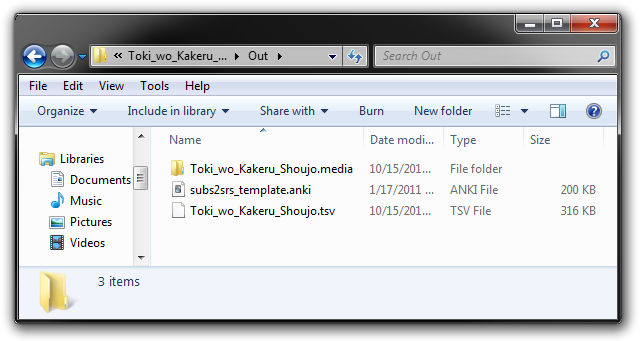
Note: The above screenshot shows the old name for the template (subs2srs_template.anki).
Rename the Anki deck template to match the .media folder.
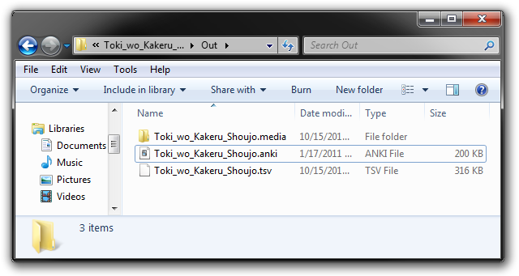
Double-click the newly renamed .anki file to open it. Then click on the File | Import menu option.
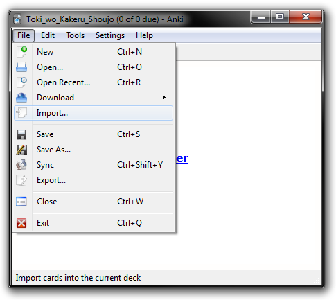
Open the .tsv import file.
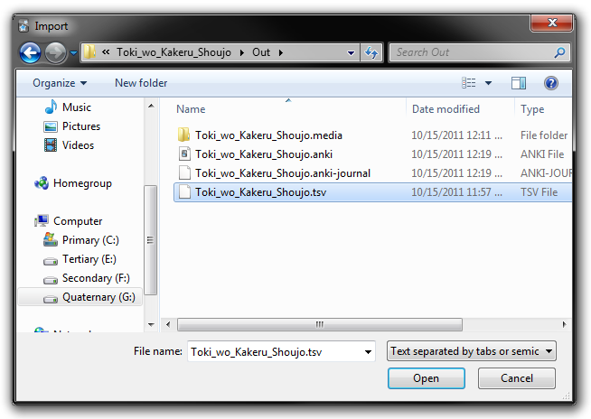
In the Import dialog, you should map each part of the import file to an Anki field. In the case of this example, the format of the import file is tag, sequence marker, image, video clip, expression, and meaning. Now just click Import and you're done!
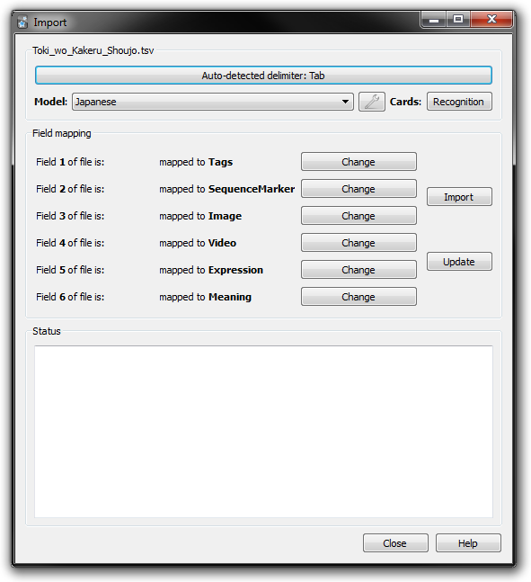
Note: The first value in the import file is always the tag and the second value in the import file is always the sequence marker.
In How to Use subs2srs you should have learned how to use subs2srs to generate a tab-separated-value (.tsv) SRS import file and .media folder.
The following is an example showing how to import the .tsv file and media into Anki 2.
First you will need to import the Ank 2 deck template that comes with subs2srs.
Open Anki 2.
From the menu, click "File | Import...".
Navigate to the subs2srs "Anki Deck Template" folder.
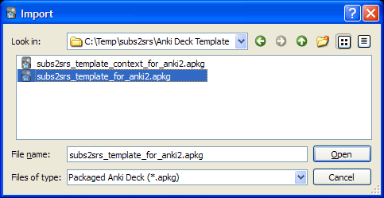
Open "subs2srs_template_for_anki2.apkg". This will place a deck called "subs2srs_template_for_anki2" in your Decks list.
Rename the "subs2srs_template_for_anki2" deck to something more meaningful. To do this, click the gear icon next to the deck, select "rename", and then enter a name.
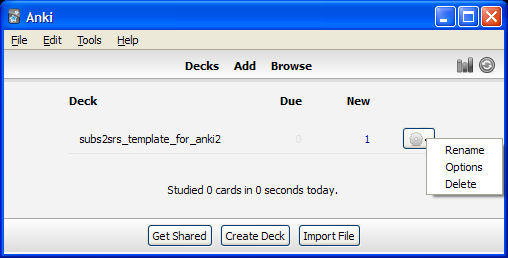
For this example, I will rename the deck to "Toki wo Kakeru Shoujo":
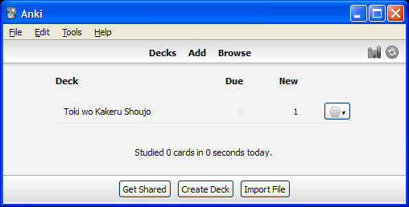
Now you will need to import the .tsv file that was generated by subs2srs.
From the menu, click "File | Import...".
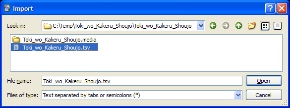
Select the .tsv file and click the Open button.
Set the Type to "subs2srs".
Set the Deck to the deck you just created. (For this example, the deck is named "Toki wo Kakeru Shoujo").
Check the "Allow HTML in fields" checkbox.
In the "Field mapping" area, map each part of the import file to an Anki field. In the case of this example, the format of the import file is tag, sequence marker, audio, snapshot, expression, and meaning.
At this point, the Import dialog should like something like this:
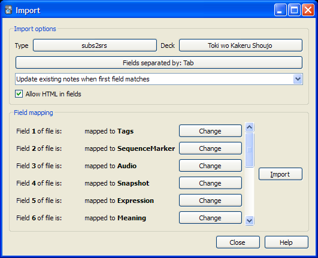
Note: The first value in the import file is always the tag and the second value in the import file is always the sequence marker.
Click the Import button.
You should see an "Importing complete." message. Click the Close button.
Now you need to copy the media files to Anki 2's media folder.
Open your "My Documents" folder, or if your using Windows 7, open the "Documents" folder.
Navigate to the "Anki" folder.
Navigate to the folder that contains your Anki user profile. Example: "User 1".
Navigate to the "collection.media" folder.
Copy all of the files from the .media folder that subs2srs generated to the collection.media folder. The following screenshot shows the files copied to the "collection.media" folder for my "User 1" Anki profile:
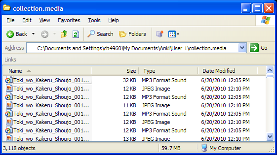
You can now start reviewing your subs2srs Anki deck. The first card is a placeholder card that was included with the template – you may delete it.
Batch processing is the execution of multiple tasks without manual intervention. subs2srs batch processing enables the user to do such things as processes multiple episodes of a TV show at once. Contrast this to the method described in the How to Use subs2srs section above where you processed one episode at a time.
subs2srs allows you to perform batch processing through the use of wildcard characters. There are two wildcard characters that you may use:
| Wildcard | Meaning |
|---|---|
| * | Match zero or more characters |
| ? | Match exactly zero or one character |
When working with multiple files, the files will be matched up alphabetically.
As an example of batch processing, say that you have 3 episodes of a TV show. Here is the setup:
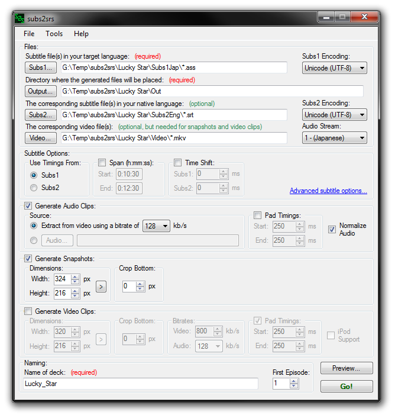
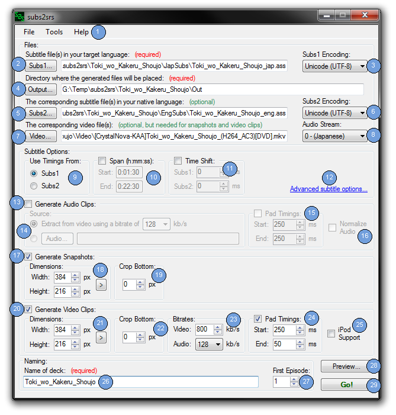
Menu
File | New:
Reset all fields to default values.
File | Open...:
Restore previous interface state.
File | Save...:
Save current state of the interface.
File | Exit:
Exit subs2srs
Tools | Extract Audio from Media...:
Show the Extract Audio from Media tool.
Tools | Dueling Subtitles Tool...:
Show the Dueling Subtitles tool.
Tools | Subs Re-Timer...:
Show the Subs Re-Timer tool.
Tools | Preferences...:
Show the Preferences dialog.
Help | Usage...:
Show this file
Help | About...:
Display information about subs2srs.
Subs1: The substitle file(s) in the language that you are trying to learn (your target language). For example, the Japanese subtitles for a TV show. The file(s) may be in .srt, .ass, .ssa, .lrc, .trs and/or Vobsub (.idx/.sub) format.
You may use the following wildcards in order to specify multiple files:
* = Match zero or more characters
? = Match exactly zero or one character
Example: enter C:\Temp\*.srt to use all .srt files in C:\Temp.
Note: When working with multiple files, the files will be matched up alphabetically.
Subs1 Encoding/Subtitle Stream: This box will change depending on the type of subfile file that appears in the Subs1 text box. If the subtitle file is text-based (.srt, .ass, .ssa, .lrc, .trs) then the Encoding box will appear and allow you to specify the text encoding of the subtitle file. If the subtitle file is Vobsub (.idx/.sub) then the Stream box will appear and allow allow you to choose which vobsub stream to use.
Note: A single Vobsub (.idx/.sub) can have multiple streams (one for English, one for Japanese, etc.). Because of this, you can use the same subtitle file for Subs1 and Subs2 but choose different streams for each.
Output: Directory where the generated files will be placed. The following files and directories will be generated here:
Subs2: The corresponding subtitle file(s) in your native language. For example, the English subtitles for a movie. The file(s) may be in .srt, .ass, .ssa, .lrc, .trs and/or Vobsub (.idx/.sub) format. This field is optional and you may leave it blank if desired.
You may use the following wildcards in order to specify multiple files:
* = Match zero or more characters
? = Match exactly zero or one character
Example: enter C:\Temp\*.srt to use all .srt files in C:\Temp.
Note 1: When working with multiple files, the files will be matched up alphabetically.
Note 2 (important): Subs1 is compared against Subs2 and not the other way around.
This means that if a subtitle file from Subs1 contains 300 lines and a subtitle file from Subs2 contains 310 lines, the maximum number of lines that will be processed is 300 (the number of lines from Subs1).
Of course, this also means that if a subtitle file from Subs1 contains 310 lines and a subtitle file from Subs2 contains only 300 lines, then 310 lines will be processed and 10 of those lines will be mismatched (subs2srs will attempt to intelligently combine or remove lines to deal with mismatches).
Subs2 Encoding/Subtitle Stream: This box will change depending on the type of subfile file that appears in the Subs2 text box. If the subtitle file is text-based (.srt, .ass, .ssa, .lrc, .trs) then the Encoding box will appear and allow you to specify the text encoding of the subtitle file. If the subtitle file is Vobsub (.idx/.sub) then the Stream box will appear and allow allow you to choose which vobsub stream to use.
Note: A single Vobsub (.idx/.sub) can have multiple streams (one for English, one for Japanese, etc.). Because of this, you can use the same subtitle file for Subs1 and Subs2 but choose different streams for each.
Video: The video file(s) that correspond to the subtitle file(s). Videos may use any format supported by ffmpeg (.avi, .mkv, etc.).
Note 1: Video filenames must not contain any Unicode characters
You may use the following wildcards in order to specify multiple files:
* = Match zero or more characters
? = Match exactly zero or one character
Example: enter C:\Temp\*.avi to use all .avi files in C:\Temp.
Note 2: When working with multiple files, the files will be matched up alphabetically.
Audio Stream: Some videos contain multiple audio streams/tracks. This option allows you to select which audio to use when making audio clips and video clips.
Use Timings From: Subtitles contain timing information that determines when they appear and for how long. You may select to use the timing information of Subs1 or Subs2. The timings are used for generating the snapshots, audio clips, and video clips. This option may be useful if one of your subtitles was specifically timed for the specific video source that you are using.
Span (h:mm:ss): Only process lines that start within the specified span of time. Span is applied after the time shift is applied.
Time Shift: Allows you to independently shift the subtitle timings by the specified number of milliseconds.
This is used for:
1) Syncing the Subs1 and Subs2 timings.
2) Syncing the subtitles to the video.
Example:
If Subs1 and the video are in sync but Subs2 is 3 seconds fast, you can shift Subs2 by -3000 milliseconds to properly sync everything.
Advanced Subtitle Options...: Show the Advanced Subtitle Options dialog.
Generate Audio Clips: Enable/Disable the generation of audio clips.
Source: Select where to get the audio tracks from. You have two options here. You can either have subs2srs automatically extract the audio from the video file(s) at the specified bitrate or you can provide corresponding audio tracks for each subtitle file. That is, one audio track for each episode of a TV show. You may want to provide the audio files when you use subs2srs with songs or audiobooks.
You may use the following wildcards in order to specify multiple files:
* = Match zero or more characters
? = Match exactly zero or one character
Example: enter C:\Temp\*.mp3 to use all .mp3 files in C:\Temp.
Note 1: When working with multiple files, the files will be matched up alphabetically.
Note 2: Automatic audio extraction has been successfully tested with audio tracks that are in the following formats: AC3, AAC, VORBIS, and MP3. Make sure that your AC3 file does not have DRM protection.
Note 3: If you choose to supply the audio file(s), the filenames within must not contain any Unicode characters.
Audio Clip Pad Timings: Pad the start and end times of each line of dialog when generating an audio clip. For example, setting the start pad to 250 means that the audio clip will start 250 milliseconds sooner than it would normally. Setting the end pad to 300 means that the audio clip will end 300 milliseconds later than it would normally.
Normalize Audio: Normalize the audio clips. Or in other words, make each audio clip the same loudness. This makes it so that you don't have to keep adjusting the volume to compensate for clips that are too soft or too loud.
Generate Snapshots: Enable/Disable the generation of snapshots. All snapshots will be taken at the halfway point of the dialog.
Snapshot Dimensions: Width and height of the generated snapshots (in pixels). You do not need to compensate for the crop. subs2srs will automatically resize as appropriate in order to compensate for the crop.
When you click the ">" button, the following dialog will appear to help you choose the snapshot dimensions to use based on a percentage of the actual video size.
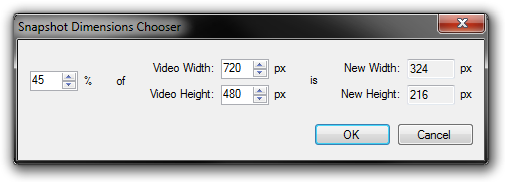
Crop Bottom: A crop may be applied to the bottom of the snapshot. This might to useful for removing hard subbed subtitles. The crop is applied against the original resolution of the video and not the resized resolution. Enter 0 if you do not wish to crop.
Generate Video Clips: Enable/Disable the generation of video clips. All generated video clips use MPEG4 for the video and MP3 for the audio. These are stuffed into an AVI container.
Video Clip Dimensions: Width and height of the generated video clips (in pixels). You do not need to compensate for the crop. subs2srs will automatically resize as appropriate in order to compensate for the crop.
When you click the ">" button, a dialog will appear to help you choose the video clip dimensions to use based on a percentage of the actual video size (see above image).
Crop Bottom: A crop may be applied to the bottom of the video clip. This might to useful for removing hard subbed subtitles. The crop is applied against the original resolution of the video and not the resized resolution. Enter 0 if you do not wish to crop.
Bitrates: The bitrate to use for audio and video when generating video clips. Higher bitrates mean higher quality at the expense of larger file sizes.
Video Clip Pad Timings: Pad the start and end times of each line of dialog when generating a video clip. For example, setting the start pad to 250 means that the video clip will start 250 milliseconds sooner than it would normally. Setting the end pad to 300 means that the video clip will end 300 milliseconds later than it would normally.
iPod Support: Output iPhone/iPod/iPad compatible video clips. AnkiMobile users should check this. The clips have h.264 encoded video, AAC encoded audio and are placed into an MP4 container.
Name of Deck: An arbitrary name to associate with your deck. It will be used in the filenames of the generated files. Any space characters will be converted to an underscore.
Note 1: You cannot use the following characters (as Windows will not allow these in filenames): \ / : * ? " < > |
Note 2: You cannot use any Unicode characters.
First Episode: The first number to use when generating filenames, tags, and sequence markers. If you wanted to start at episode 3 (that is, the files for episode 1 and episode 2 are not in the provided directories), then put a 3 in this box.
Preview: Show the Preview dialog.
Go!: Start processing the subtitles. subs2srs will warn you if you have made any input errors (a red icon will appear next to each field that contains an error). A progress bar will appear for each step (subtitle processing, Anki import file generation, audio clip generation, snapshot generation, and video clip generation).
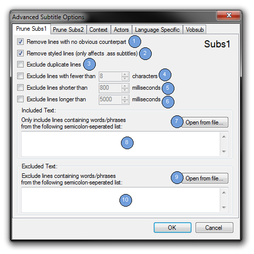
Remove Lines With No Obvious Counterpart: Remove any lines that do not have an obvious counterpart in the other set of subtitles. Useful for removing unwanted credits, descriptions of audio (such as 'wind blowing' or 'door creaking'), and things that aren't quite words (such as grunts or coughs).
Remove Styled Lines: Remove styled lines when parsing .ass subtitles. A styled line is one that starts with a '{' character. It is often something unwanted such as a karaoke effect.
Exclude Duplicate Lines: Remove duplicate lines of dialog from either Subs1 or Subs2. When enabled, only the first instance of a line will be used. Has no effect when using Vobsubs (.idx/.sub).
Exclude lines with fewer than # characters: You may set a minimum character length for a line of dialog. Any line not meeting the minimum character length will not be processed. The purpose is to help eliminate easy/trivial lines. This feature may be Enabled/Disabled. Has no effect when using Vobsubs (.idx/.sub).
Exclude lines shorter than # milliseconds: You may set a minimum length for a line in milliseconds. Any line whose timing not meeting the minimum number of milliseconds will not be processed. In the 'Prune Subs1' tab, this option will only be used if the 'Use Timings From' option is set to Subs1. Likewise for 'Prune Subs2'.
Exclude lines longer than # milliseconds: You may set a maximum length for a line in milliseconds. Any line whose timing exceeds the maximum number of milliseconds will not be processed. In the 'Prune Subs1' tab, this option will only be used if the 'Use Timings From' option is set to Subs1. Likewise for 'Prune Subs2'.
Open From File (Include): Open a file containing a semicolon separated list of words or phrases to use as the include list.
Include List: Enter a semicolon separated list of words or phrases here. In order to be processed, a line of dialog will have to contain at least one of these words or phrases. This can be helpful if you are trying to get examples of certain words that you are studying. Space characters will not be stripped out. Has no effect when using Vobsubs (.idx/.sub).
Open From File (Exclude): Open a file containing a semicolon separated list of words or phrases to use as the exclude list.
Exclude List: Enter a semicolon separated list of words or phrases here. In order to be processed, a line of dialog must not contain any of these words or phrases. Space characters will not be stripped out. Has no effect when using Vobsubs (.idx/.sub).
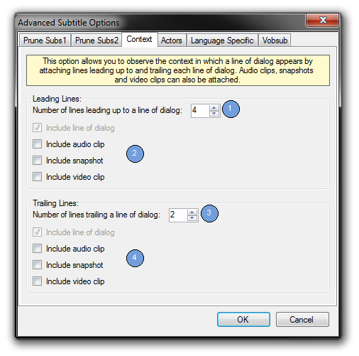
Number of lines leading up to a line of dialog: The number of lines before a line of dialog to attach to a fact.
Include audio clip / snapshot / video clip: You may choose which information from the leading lines that you would like to appear in the .tsv import file. For example, if would only like to import the audio clip information from a leading lines, than check only that option. This feature makes the .tsv import file less cluttered with information that is not important to you and makes it easier to import into Anki.
Note: The Subs1 text and Subs2 text of the leading lines are always placed into the .tsv file.
Number of lines trailing a line of dialog: The number of lines after a line of dialog to attach to a fact.
Include audio clip / snapshot / video clip: You may choose which information from the trailing lines that you would like to appear in the .tsv import file. For example, if would only like to import the audio clip information from a trailing lines, than check only that option. This feature makes the .tsv import file less cluttered with information that is not important to you and makes it easier to import into Anki.
Note: The Subs1 text and Subs2 text of the trailing lines are always placed into the .tsv file.
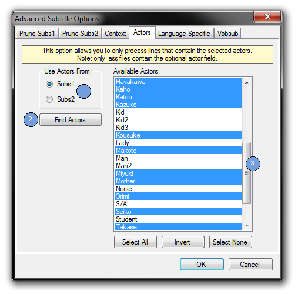
Use Actors From: Use the actor/character names found in the .ass/.ssa files of either the Subs1 or Subs2 directory.
Find Actors: Scan the .ass files of the selected subtitle directory for actor/character names. If any names are found, they will be listed to the right. Since the actor/character name field is optional, not all .ass files will have actor/character names associated with each line of dialog.
Available Actors: The list of available actor/character names. Only lines that are associated with one of the selected names will be processed. For example, if you only want to hear the lines of the character "Makoto", deselect all other names and then select "Makoto" from the list. If no actors are selected, processing will take place as normal.
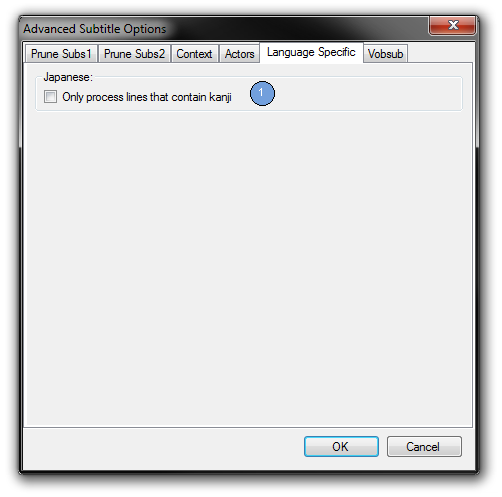
Only process lines containing kanji: If selected, only lines containing one or more kanji will be processed.
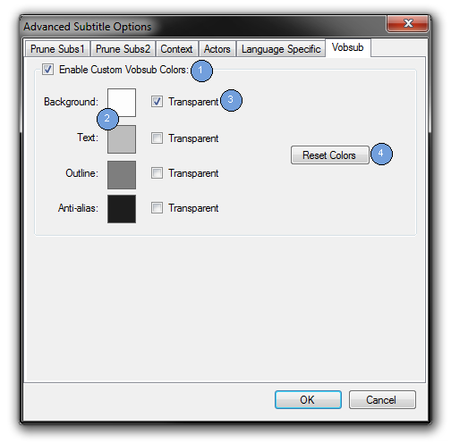
Enable Custom Vobsub Colors: Use custom colors when processing images extracted from Vobsub (.idx/.sub) files.
Colors: Select a color to use for each part of the subtitle.
Transparent: Select whether or not a part of the subtitle should be transparent. The color is ignored when this is enabled.
Reset Colors: Reset the colors and transparency settings to their defaults.
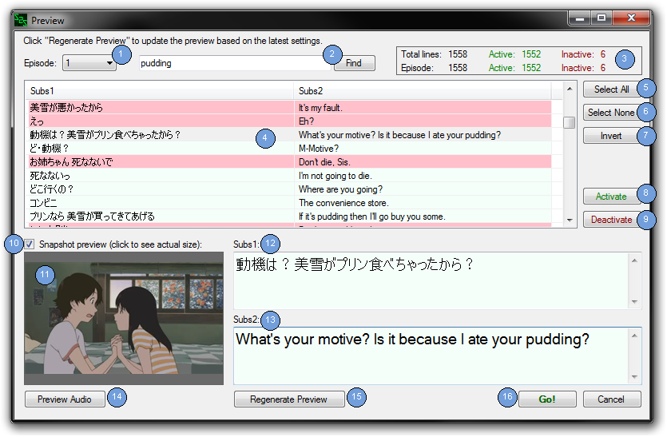
Overview:
The Preview interface will show you a list of the lines that may be processed by subs2srs when the Go! button is pressed. After entering the desired settings you can use this preview to verify that subs2srs is correctly matching lines between Subs1 and Subs2, as well as verify that the audio timings and snapshots are correct. If something doesn't seem right to you, just modify the settings and click the Regenerate Preview button.
The preview will also show you which lines will be processed (and end up in the Anki export file) and which lines will be discarded. subs2srs provides this capability with the concept of active and inactive lines. Active lines (shown in pale green) will be processed by subs2srs and inactive lines (shown in pink) will be discarded. With the default settings, all lines are set to active. The active state of the lines can be affected by various settings such as the Span settings in the Main interface or the Prune settings in the Advanced Subtitle Options interface. In addition, you may hand pick exactly which lines are active and which lines are inactive with the Activate and Deactivate buttons.
For really pesky lines, you may use this interface to hand edit the text for each line. However, for the time being, you may not edit the timings for each individual line.
Note of caution: By clicking the Regenerate Preview button or exiting the Preview dialog, you will lose all hand edits that you have made to the text and to the active state for each line. In order to prevent accidents, subs2srs will warn you if you are about to wipe out your edits. It is recommended that you adjust the settings first and then hand edit the text and the active state.
Find: Allows you to search for the provided text in the current episode. The search will start from the currently selected line and will wrap around to the beginning if necessary. The search is not case-sensitive. Wild cards and regular expressions are not supported at this time.
Special search options:
Begin the search text with "a:" to search only active items. Example search: "a:search text". Omit the search text to search for the next active item.
Begin the search text with "i:" to search only inactive items. Example search: "i:search text". Omit the search text to search for the next inactive item.
Statistics Box: Allows you to see the number of lines in the current episode and the total number of lines in all episodes. It includes a breakdown of the number active and inactive lines.
List of Lines: Displays each Subs1 line and its corresponding Subs2 line. Active lines are drawn in pale green and inactive lines are drawn in pink. This is a good place to make sure that subs2srs is matching up the lines correctly. If the lines aren't matching very well, try shifting the timings in the Main interface or editing the subtitles file(s) with Aegisub. Afterwards, click the "Regenerate Preview" button to update the preview. Select a line from the list in order to preview its corresponding audio clip and snapshot (see below).
Note: If you checked the snapshot preview box, expect a short delay when selecting a line as the snapshot is extracted from the video file.
Activate: Make the selected lines active. subs2srs will only process lines marked as active. Active lines have a pale green background.
Deactivate: Make the selected lines inactive. Inactive lines will not be processed by subs2srs and will not be placed into the Anki export file. Inactive lines have a pink background.
Snapshot Preview Checkbox: Check this box to generate a preview of the snapshot. Generating a snapshot preview will introduce a slight delay when selecting lines.
Snapshot Preview: A thumbnail preview of the snapshot will be generated for this line. This is good place to check the Crop setting from the Generate Snapshots section of the Main interface. The thumbnail preview will scale to preserve the correct aspect ratio. Click on the thumbnail preview to display the un-scaled, actual-size snapshot based on the Dimensions setting.
Subs1 Text: The text of Subs1. You may edit the text if you so desire. For Vobsub (.idx/.sub) subtitles, the actual Vobsub image will be displayed here (unlike in the list). This is a good place to test custom Vobsub colors.
Subs2 Text: The text of Subs2. You may edit the text if you so desire. For Vobsub (.idx/.sub) subtitles, the actual Vobsub image will be displayed here (unlike in the list). This is a good place to test custom Vobsub colors.
Preview Audio: Play the audio clip associated with the currently selected line. This is a good place to make sure that your Time Shift, Pad Timings, and Bitrate settings are acceptable.
Note: Expect a short delay the first time you press the button after selecting a line. The audio is being extracted/cut during this delay. Subsequent clicks should be instantaneous until a new line is selected.
Regenerate Preview: Each time you finish making updates to the settings (for example, to change the pad for the audio timings) you should click this button to update the preview with the latest settings.
Warning: By pressing this button you will lose all hand edits that you have made to the text and to the active state for each line.
Go!: Start processing the subtitles. Only lines marked as active (the pale green lines) will be processed.
How to enable the hidden video preview option: In order to enable the video preview button on the video preview interface, open Tools | Preferences... and fill in the 'Video Player Path' and 'Video Player Arguments' preferences.
Example:
Video Player Path = C:\Program Files\vlc\vlc.exe
Video Player Arguments = --one-instance --start-time=${s_total_sec} --stop-time=${e_total_sec} --video-x=0 --video-y=0 --width=${width} --height=${height} --video-title=${s_hour}:${s_min}:${s_sec}
The tokens (things like ${s_total_sec}) are defined here.
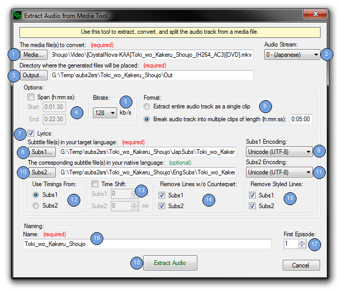
Use this tool to extract, convert, and split the audio track from a media file. You may extract the audio track as a single clip or break the audio track into multiple clips of a provided length. The audio track will be extracted in mp3 format.
Media: The media file(s) to extract, convert, and split.
Note 1: The filenames within must not contain any Unicode characters.
You may use the following wildcards in order to specify multiple files:
* = Match zero or more characters
? = Match exactly zero or one character
Example: enter C:\Temp\*.avi to use all .avi files in C:\Temp.
Note 2: When working with multiple files, the files will be matched up alphabetically.
Audio Stream: Some videos contain multiple audio streams/tracks. This option allows you to select which audio to use.
Output: The directory where the generated .mp3 files will be placed.
Span (h:mm:ss): Only process lines that start within the specified span of time.
Bitrate: The bitrate of the extracted mp3 files. Higher bitrates mean higher quality at the expense of larger file sizes
Format: You have two options here: you can either extract the entire audio track as a single clip or you can break the audio track into multiple clips. If you choose the latter, can must specify the length of each clip (in h:mm:ss) format.
Lyrics: Enable/Disable adding lyrics to each generated .mp3's ID3 Lyrics tag. The lyrics are based off of subtitle files. The timestamps in the lyrics are relative to the start of the clip.
Subs1: The subtitle files(s) in the language that you are trying to learn (your target language) to use in the lyrics. For example, the Japanese subtitles for a TV show. The file(s) may be in .srt, .ass, .ssa, .lrc and/or .trs format.
You may use the following wildcards in order to specify multiple files:
* = Match zero or more characters
? = Match exactly zero or one character
Example: enter C:\Temp\*.srt to use all .srt files in C:\Temp.
Note: When working with multiple files, the files will be matched up alphabetically.
Subs2: The corresponding subtitle file(s) in your native language for use in the lyrics. For example, the English subtitles for a movie. The file(s) may be in .srt, .ass, .ssa, .lrc and/or .trs format. This field is optional. Leave blank if you do not want or have the corresponding set of subtitles.
You may use the following wildcards in order to specify multiple files:
* = Match zero or more characters
? = Match exactly zero or one character
Example: enter C:\Temp\*.srt to use all .srt files in C:\Temp.
Note 1: When working with multiple files, the files will be matched up alphabetically.
Note 2 (important): Subs1 is compared against Subs2 and not the other way around.
This means that if a subtitle file from Subs1 contains 300 lines and a subtitle file from Subs2 contains 310 lines, the maximum number of lines that will be processed is 300 (the number of lines from Subs1).
Of course, this also means that if a subtitle file from Subs1 contains 310 lines and a subtitle file from Subs2 contains only 300 lines, then 310 lines will be processed and 10 of those lines will be mismatched (subs2srs will attempt to intelligently combine or remove lines to deal with mismatches).
Use Timings From: Subtitles contain timing information that determines when they appear and for how long. You may select to use the timing information of Subs1 or Subs2. This option may be useful if one of your subtitles was specifically timed for the specific video source that you are using.
Time Shift: Allows you to independently shift the subtitle timings by the specified number of milliseconds.
This is used for:
1) Syncing the Subs1 and Subs2 timings.
2) Syncing the subtitles to the video.
Example:
If Subs1 and the video are in sync but Subs2 is 3 seconds fast, you can shift Subs2 by -3000 milliseconds to properly sync everything.
Remove Lines w/o Counterpart: Remove any lines that do not have an obvious counterpart in the other set of subtitles. Useful for removing unwanted credits, descriptions of audio (such as 'wind blowing' or 'door creaking'), and things that aren't quite words (such as grunts or coughs).
Remove Styled Lines: Remove styled lines when parsing .ass subtitles. A styled line is one that starts with a '{' character. It is often something unwanted such as a karaoke effect.
Name: An arbitrary name to associate with the filenames of the generated files. Any space characters will be converted to an underscore.
Note 1: You cannot use the following characters (as Windows will not allow these in filenames): \ / : * ? " < > |
Note 2: You cannot use any Unicode characters.
First Episode: The first number to use when generating filenames. If you wanted to start at episode 3 (that is, the video files for episode 1 and episode 2 are not in the provided directories), then put a 3 in this box.
Extract Audio: Start the audio extraction process.
Note: Audio extraction has been successfully tested with audio tracks that are in the following formats: AC3, AAC, VORBIS, and MP3. Make sure that your AC3 file does not have DRM protection.
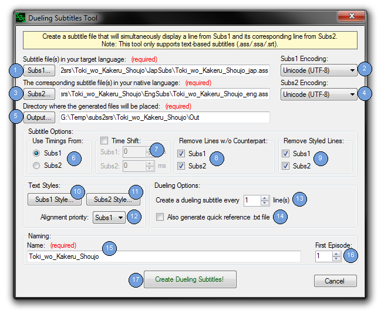
Use this tool to create subtitle files (in .ass format) that will simultaneously display a line from Subs1 and its corresponding line from Subs2. Here are some screenshots that demonstrate the Dueling Subtitles feature:
The following screenshot shows the default style settings:
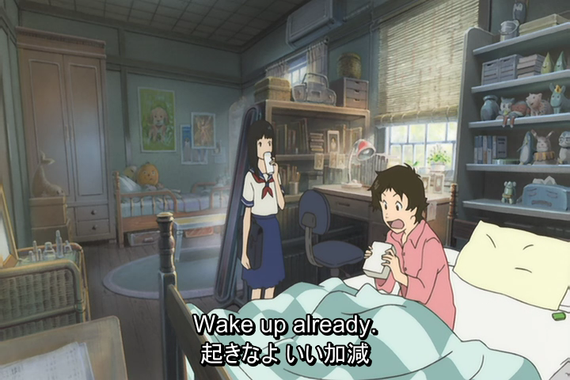
The following screenshot shows Subs2 displayed at the top of the screen with a different style
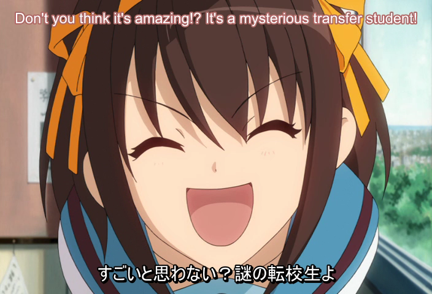
These subtitles can be used in any video player that accepts .ass subtitle files. In order to display the subtitles, it is usually as simple as renaming the subtitles to match the name of the video file and then opening the video file or finding your player's "open subtitles" feature. This feature might be useful for those who are hesitant about viewing only the foreign language subtitles for fear that they might not get as much enjoyment out of it. And for those who want to instantly check their listening comprehension.
Subs1: The subtitle files(s) in the language that you are trying to learn (your target language). For example, the Japanese subtitles for a TV show. The file(s) may be in .srt, .ass, and/or .ssa format.
You may use the following wildcards in order to specify multiple files:
* = Match zero or more characters
? = Match exactly zero or one character
Example: enter C:\Temp\*.srt to use all .srt files in C:\Temp.
Note: When working with multiple files, the files will be matched up alphabetically.
Subs2: The corresponding subtitle file(s) in your native language for use in the lyrics. For example, the English subtitles for a movie. The file(s) may be in .srt, .ass, and/or .ssa format. This field is optional. Leave blank if you do not want or have the corresponding set of subtitles.
You may use the following wildcards in order to specify multiple files:
* = Match zero or more characters
? = Match exactly zero or one character
Example: enter C:\Temp\*.srt to use all .srt files in C:\Temp.
Note 1: When working with multiple files, the files will be matched up alphabetically.
Note 2 (important): Subs1 is compared against Subs2 and not the other way around.
This means that if a subtitle file from Subs1 contains 300 lines and a subtitle file from Subs2 contains 310 lines, the maximum number of lines that will be processed is 300 (the number of lines from Subs1).
Of course, this also means that if a subtitle file from Subs1 contains 310 lines and a subtitle file from Subs2 contains only 300 lines, then 310 lines will be processed and 10 of those lines will be mismatched (subs2srs will attempt to intelligently combine or remove lines to deal with mismatches).
Output: The directory where the generated files will be placed.
Use Timings From: Subtitles contain timing information that determines when they appear and for how long. You may select to use the timing information of Subs1 or Subs2. The timings are used for combining lines from Subs1 and Subs2. This option may be useful if one of your subtitles was specifically timed for the specific video source that you are using.
Time Shift: Allows you to independently shift the subtitle timings by the specified number of milliseconds.
This is used for:
1) Syncing the Subs1 and Subs2 timings.
2) Syncing the subtitles to the video.
Example:
If Subs1 and the video are in sync but Subs2 is 3 seconds fast, you can shift Subs2 by -3000 milliseconds to properly sync everything.
Remove Lines w/o Counterpart: Remove any lines that do not have an obvious counterpart in the other set of subtitles. Useful for removing unwanted credits, descriptions of audio (such as 'wind blowing' or 'door creaking'), and things that aren't quite words (such as grunts or coughs).
Remove Styled Lines: Remove styled lines when parsing .ass subtitles. A styled line is one that starts with a '{' character. It is often something unwanted such as a karaoke effect.
Subs1 Style: Adjust the styling of a Dueling Subtitle's Subs1 lines. See The Subtitle Style Interface.
Subs2 Style: Adjust the styling of a Dueling Subtitle's Subs2 lines. See The Subtitle Style Interface.
Alignment Priority: When Subs1 and Subs2 both have the same alignment style, this option determines which one gets priority. For example: If both Subs1 and Subs2 are aligned to the bottom of the screen, set this value to "Subs2" to force Subs2 to be drawn below Subs1.
Create a dueling subtitle every X lines: Determine the sequence at which a line from Subs2 is displayed simultaneously with the line from Subs1. Setting this value greater than one acts as a sort of "hint". For example: Set this value to 3 to display the corresponding line from Subs2 every 3 subtitle lines. The sequence would be:
Also generate quick reference .txt file: In addition to the subtitle file, also generate a quick reference .txt file with just the Subs1 and Subs2 text. Can be useful for following the dialog and looking up unknown words.
Name of Deck: An arbitrary name to associate with the filenames of the generated files. Any space character will be converted to an underscores.
Note: You cannot use the following characters (as Windows will not allow these in filenames): \ / : * ? " < > |
First Episode: The first number to use when generating filenames. If you wanted to start at episode 3 (that is, the files for episode 1 and episode 2 are not in the provided directories), then put a 3 in this box.
Create Dueling subtitles!: Process each of the Subs1 and Subs2 subtitles files and combine them to create corresponding Dueling Subtitles in .ass format.
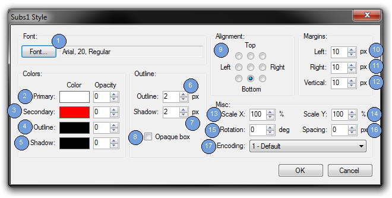
This interface allows you to modify the Subs1 or Subs2 subtitle style when generating Dueling Subtitles. It should be somewhat familiar to those who use Aegisub.
Font: Launches the standard font chooser dialog which allows you to choose the font and its size. It also allows you to select the bold, italic, underline, and strikeout settings.
Primary Color: Select the primary color and its opacity. Opacity ranges from 0 (opaque) to 255 (transparent). This is the color that a subtitle will normally appear in.
Secondary Color: Select the secondary color and its opacity. Opacity ranges from 0 (opaque) to 255 (transparent). This color may be used instead of the Primary color when a subtitle is automatically shifted to prevent an onscreen collision, to distinguish the different subtitles.
Note: In practice, I don't think that I have ever seen the Secondary color used by a video player.
Outline Color: Select the outline color and its opacity. Opacity ranges from 0 (opaque) to 255 (transparent).
Shadow Color: Select the shadow color and its opacity. Opacity ranges from 0 (opaque) to 255 (transparent).
Outline: The width (in pixels) of the outline that surrounds the text.
Shadow: The depth (in pixels) of the shadow behind the text.
Left Margin: Define the left margin in pixels. It is the distance from the left-hand edge of the screen. The three onscreen margins define areas in which the subtitle text will be displayed.
Right Margin: Define the right margin in pixels. It is the distance from the right-hand edge of the screen. The three onscreen margins define areas in which the subtitle text will be displayed.
Vertical Margin: Define the vertical margin in pixels. It is the distance from the top/bottom edge of the screen. The three onscreen margins define areas in which the subtitle text will be displayed.
Rotation: Number of degrees to rotate the text. The origin of the rotation is defined by the alignment.
Encoding: This specifies the font character set or encoding and on multi-lingual Windows installations it provides access to characters used in multiple than one language. You can probably ignore this setting.
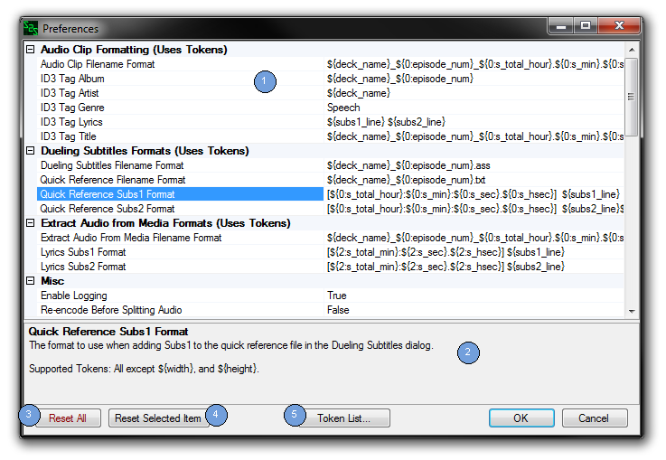
This interface allows advanced users to modify preferences such as common GUI defaults and output formats.
Some of the preferences allow the use of tokens. If a preference does allow the use of tokens, it will specify which tokens are valid in its description. Here is the list of all tokens:
| Token | Description |
|---|---|
| ${episode_num} | Number of the current episode. Range: first episode-last episode. |
| ${sequence_num} | Number of the current line being processed. Range: 0-${total_line_num}. |
| ${total_line_num} | Total number of lines that will be processed. |
| ${width} | Width of the video. |
| ${height} | Height of the video. |
| ${deck_name} | Name of the deck. |
| ${subs1_line} | Current line of dialog from Subs1. |
| ${subs2_line} | Current line of dialog from Subs2. |
| ${cr} | Insert a carriage return ('\r') character. |
| ${lf} | Insert a line feed ('\n') character. |
| ${tab} | Insert a tab ('\t') character. |
| ${s_hour} | Hours based on the START TIME of the current line of dialog. Range: 0-24. |
| ${s_min} | Minutes based on the start time of the current line of dialog. Range: 0-59. |
| ${s_sec} | Seconds based on the start time of the current line of dialog. Range: 0-59. |
| ${s_hsec} | Hundredths of seconds based on the start time of the current line of dialog. Range: 0-99. |
| ${s_msec} | Milliseconds based on the start time of the current line of dialog. Range: 0-999. |
| ${s_total_hour} | Total hours based on the start time of the current line of dialog. Range: 0-inf. |
| ${s_total_min} | Total minutes based on the start time of the current line of dialog. Range: 0-inf. |
| ${s_total_sec} | Total seconds based on the start time of the current line of dialog. Range: 0-inf. |
| ${s_total_hsec} | Total hundredths of seconds based on the start time of the current line of dialog. Range: 0-inf. |
| ${s_total_msec} | Total milliseconds based on the start time of the current line of dialog. Range: 0-inf. |
| ${e_hour} | Hours based on the END TIME of the current line of dialog. Range: 0-24. |
| ${e_min} | Minutes based on the end time of the current line of dialog. Range: 0-59. |
| ${e_sec} | Seconds based on the end time of the current line of dialog. Range: 0-59. |
| ${e_hsec} | Hundredths of seconds based on the end time of the current line of dialog. Range: 0-99. |
| ${e_msec} | Milliseconds based on the end time of the current line of dialog. Range: 0-999. |
| ${e_total_hour} | Total hours based on the end time of the current line of dialog. Range: 0-inf. |
| ${e_total_min} | Total minutes based on the end time of the current line of dialog. Range: 0-inf. |
| ${e_total_sec} | Total seconds based on the end time of the current line of dialog. Range: 0-inf. |
| ${e_total_hsec} | Total hundredths of seconds based on the end time of the current line of dialog. Range: 0-inf. |
| ${e_total_msec} | Total milliseconds based on the end time of the current line of dialog. Range: 0-inf. |
| ${d_hour} | Hours based on the DURATION time of the current line of dialog. Range: 0-24. |
| ${d_min} | Minutes based on the duration time of the current line of dialog. Range: 0-59. |
| ${d_sec} | Seconds based on the duration time of the current line of dialog. Range: 0-59. |
| ${d_hsec} | Hundredths of seconds based on the duration time of the current line of dialog. Range: 0-99. |
| ${d_msec} | Milliseconds based on the duration time of the current line of dialog. Range: 0-999. |
| ${d_total_hour} | Total hours based on the duration time of the current line of dialog. Range: 0-inf. |
| ${d_total_min} | Total minutes based on the duration time of the current line of dialog. Range: 0-inf. |
| ${d_total_sec} | Total seconds based on the duration time of the current line of dialog. Range: 0-inf. |
| ${d_total_hsec} | Total hundredths of seconds based on the duration time of the current line of dialog. Range: 0-inf. |
| ${d_total_msec} | Total milliseconds based on the duration time of the current line of dialog. Range: 0-inf. |
| ${m_hour} | Hours based on the MIDPOINT TIME of the current line of dialog. Range: 0-24. |
| ${m_min} | Minutes based on the midpoint time of the current line of dialog. Range: 0-59. |
| ${m_sec} | Seconds based on the midpoint time of the current line of dialog. Range: 0-59. |
| ${m_hsec} | Hundredths of seconds based on the midpoint time of the current line of dialog. Range: 0-99. |
| ${m_msec} | Milliseconds based on the midpoint time of the current line of dialog. Range: 0-999. |
| ${m_total_hour} | Total hours based on the midpoint time of the current line of dialog. Range: 0-inf. |
| ${m_total_min} | Total minutes based on the midpoint time of the current line of dialog. Range: 0-inf. |
| ${m_total_sec} | Total seconds based on the midpoint time of the current line of dialog. Range: 0-inf. |
| ${m_total_hsec} | Total hundredths of seconds based on the midpoint time of the current line of dialog. Range: 0-inf. |
| ${m_total_msec} | Total milliseconds based on the midpoint time of the current line of dialog. Range: 0-inf. |
To specify leading zeroes use the following notation:
${<<# of leading zeros>>:<<token>>}.
For example: ${4:sequence_num} will specify up to 4 leading zeroes.
To have subs2srs choose the minimum number of leading zeroes needed, specify 0 for <<# of leading zeros>>.
For example: ${0:sequence_num} will use up to 2 leading zeroes when ${total_line_num} is 84.
It will use up to 3 leading zeroes when ${total_line_num} is 537. Etc.
The default value will be used for any preference that requires a non-blank value but is not given one.
If a preference has a valid range of values, it will be provided in the description of that preference. If a value is out of range, the default value will be used instead.
For filename format preferences, you should make certain that the resulting filename will be unique. Otherwise, the file may by overwritten.
Preferences Editor: Allows you to edit a preference. The name of the preference is on the left side and the value of the preference is on the right side. Just click on a value to start editing.
Preference Description: Shows you the description of the selected preference and (if applicable) it's range or valid tokens.
Reset All: Reset all preferences to default values. You will be asked for confirmation before doing so.
Reset Selected Item: Reset the selected item to it's default value.
Token List...: Show the list of tokens.
Why do certain characters from my text-based subtitles look strange when I view them in the Preview Interface or when I import them into Anki?
Probably because the subtitles are not encoded in UTF-8. By default, subs2srs expects UTF-8 encoded subtitles. You may specify the subtitle encoding using either the Subs1 or Subs2 Encoding box.
Why don't some of the lines from my text-based subtitles get processed? Also why don't some lines from my subtitle file look exactly the same after being processed?
First, see the notes in the Subs2... part of the Main Interface section. To add to that, subs2srs tries to fix mismatched lines by combining one or more lines to form a better match. If you have the Remove Lines With No Obvious Counterpart option checked, subs2srs may remove lines that do not have a counterpart in the other subtitle file.
It could also be that the subtitle parser is removing/modified lines:
Subrip (.srt)
Advanced Substation Alpha (.ass/.ssa)
Lyric (.lrc)
Transcriber (.trs)
I'm getting this error message: "Failed to extract the audio from the video. Make sure that the video does not have any DRM restrictions." What did I do wrong?
You haven't done anything wrong. subs2srs relies on a tool called ffmpeg to do all of its video and audio processing. ffmpeg is a great tool, but it's not perfect and sometimes it will refuse to process the audio (especially multi-channel audio). You can work around this by extracting the audio for the video file in another program, converting the audio to mp3 format and then providing that mp3 to subs2srs.
Are there any command line options?
Just one. The first argument may be the path to a .s2s file that you want load upon startup. Note: You can create a .s2s with the File | Save... menu option.
Where can I find foreign language subtitles?
I only know of these resources:
What tool can I use to modify subtitle timings?
Use Aegisub or Subs Re-Timer.
What tool(s) can I use to extract subtitles from an MKV file?
Use MKVExtractGUI-2. It requires mkvtoolnix.
How can I extract subtitles from a DVD?
To convert DVD subtitles to Vobsub subtitles, use VSRip.
Why does subs2srs create .png files instead of text when I provide subtitles in Vobsub (.idx/.sub) format?
Vobsub (.idx/.sub) is an image-based subtitle format, not a text-based subtitle format. subs2srs merely extract the images and converts them to a format that can be used with Anki (.png).
If you want to convert Vobsubs to text-based subtitle format (like .srt), you will need to use some sort of OCR software such as SubRip.
I have a problem with subs2srs and nothing in this file has helped me to resolve it. What is the best way to get my problem resolved?
E-mail me at cb4960 'at' [gmail] 'dot' [com]. Be sure to attach the appropriate log file (in the Logs directory), subtitle files and, if applicable, the generated .tsv file.
I have feature suggestion, are you willing to entertain it?
Sure, post the suggestion in the feedback thread at http://forum.koohii.com/viewtopic.php?id=2643&p=1. Most of the features currently in subs2srs were originally suggestions from the community so don't hesitate.